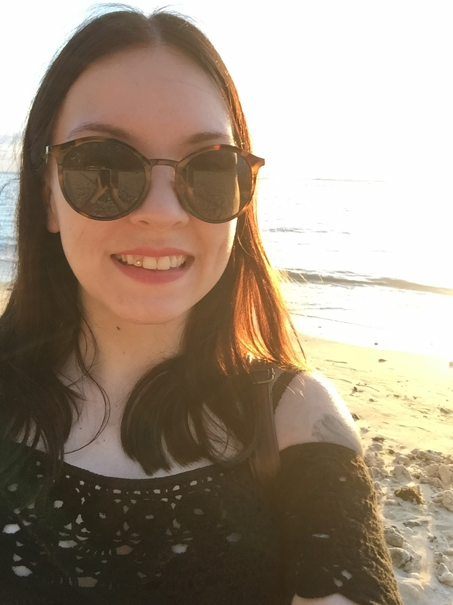
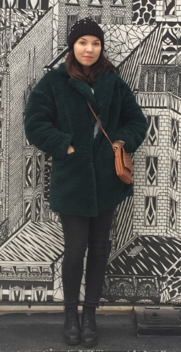

Presentation
 So who am I and what is my story?
I am a 26-year-old, born and raised in Stockholm and currently located in the same city. Cats, music and travel are my big passions in life. Apart from that, I am a vegetarian food lover, Netflix binger and a grammar nerd.
 My interest in media and communication has together with my sense of creativity led me through my education and career choices. At high school, I studied at a music and multimedia programme. This is when I found out that I wanted to know more about digital marketing and advertising, which led me to an evening course in interactive marketing in the Fall of 2012, which got me totally hooked.
After 4 years from then, I ended up at the Bachelor's programme in Digital Media at Stockholm University between 2016-2019, being taught a variety of valuable subjects within the field. During this period, I also got accepted to be an exchange student for one semester at the University of Oklahoma, which became an unforgettable experience itself. At the moment, I have just arrived back home from doing field work for my thesis in Mauritius, and I am on my way to graduate.
© 2019 by Kristin Panes. Background photo of New York City by me.